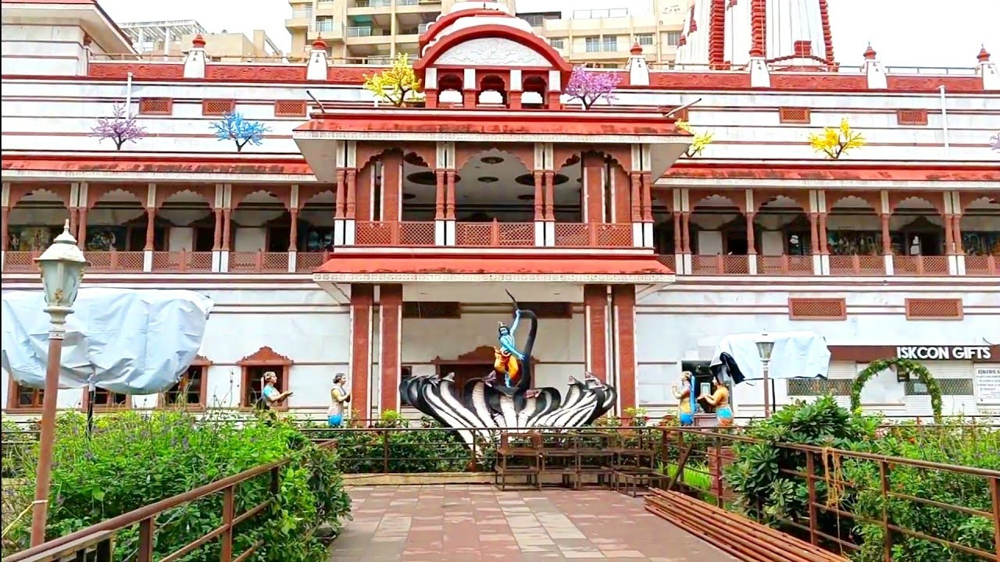

Shaniwar Wada: The Historic Fort
Shaniwar Wada is a historic fortification in Pune, known for its stunning architecture and rich history. It was the seat of the Peshwas of the Maratha Empire and is a must-visit for history enthusiasts.
Fun Fact:
~Shaniwar Wada was built in 1732 and was once the seat of power for the Maratha Empire!
Things to Explore at Shaniwar Wada:
-
The Main Gate:
Admire the grand entrance with its intricate carvings and massive wooden doors.
-
The Lotus Fountain:
A beautiful fountain that adds to the charm of the fort.
-
The Audience Hall:
Explore the remains of the hall where important meetings were held.
-
The Fort Walls:
Walk along the fort walls for panoramic views of Pune city.
-
Light and Sound Show:
Experience the history of Shaniwar Wada through an engaging light and sound show in the evenings.
Why Visit Shaniwar Wada?
!Because it’s a historical gem that offers a glimpse into Pune’s glorious past, with stunning architecture and fascinating stories waiting to be discovered!
Aga Khan Palace: A Symbol of Freedom
Aga Khan Palace is a majestic structure that played a significant role in India's freedom struggle. It is now a museum dedicated to Mahatma Gandhi and his associates.
Fun Fact:
~Aga Khan Palace was built in 1892 and served as a prison for Mahatma Gandhi and his followers during the Quit India Movement!
Things to Explore at Aga Khan Palace:
-
The Museum:
Discover artifacts and photographs related to Mahatma Gandhi's life and the Indian independence movement.
-
The Gardens:
Stroll through the beautifully landscaped gardens surrounding the palace.
-
The Samadhi of Kasturba Gandhi:
Pay your respects at the memorial of Mahatma Gandhi's wife, Kasturba Gandhi.
-
The Palace Architecture:
Admire the stunning Italianate architecture of the palace.
-
The Library:
Explore the library that houses a collection of books on Gandhian philosophy.
Why Visit Aga Khan Palace?
!Because it’s not just a beautiful palace, but also a place of historical significance that tells the story of India’s struggle for freedom!

Dagdusheth Halwai Ganapati Temple: The Divine Abode
Dagdusheth Halwai Ganapati Temple is one of the most famous temples in Pune, dedicated to Lord Ganesha. It is known for its stunning architecture and vibrant festivals.
Fun Fact:
~The temple was built in 1893 by Dagdusheth Halwai, a sweet maker, and has been a center of devotion ever since!
Things to Explore at Dagdusheth Halwai Ganapati Temple:
-
The Main Idol:
Marvel at the magnificent idol of Lord Ganesha adorned with gold and jewels.
-
The Architecture:
Admire the intricate carvings and beautiful architecture of the temple.
-
The Festivals:
Experience the vibrant celebrations during Ganesh Chaturthi and other festivals.
-
The Prasad:
Don’t miss the delicious prasad offered at the temple.
-
The Surrounding Market:
Explore the bustling market around the temple for souvenirs and local snacks.
Why Visit Dagdusheth Halwai Ganapati Temple?
!Because it’s a spiritual haven that offers a glimpse into Pune’s rich cultural heritage and devotion to Lord Ganesha!

Pune Okayama Friendship Garden: A Serene Escape
Pune Okayama Friendship Garden is a beautiful Japanese garden that offers a peaceful retreat from the city's hustle and bustle. It is designed to promote friendship between India and Japan.
Fun Fact:
~The garden was inaugurated in 2008 and is inspired by the Okayama Korakuen Garden in Japan!
Things to Explore at Pune Okayama Friendship Garden:
-
The Japanese Architecture:
Admire the traditional Japanese structures and bridges within the garden.
-
The Waterfalls:
Enjoy the serene sound of waterfalls cascading through the garden.
-
The Walking Trails:
Take a leisurely stroll along the well-maintained walking paths surrounded by lush greenery.
-
The Tea House:
Relax at the tea house and enjoy a cup of traditional Japanese tea.
-
The Seasonal Flowers:
Experience the beauty of seasonal flowers that bloom throughout the year.
Why Visit Pune Okayama Friendship Garden?
!Because it’s a tranquil oasis that offers a unique blend of Indian and Japanese culture, perfect for relaxation and reflection!
Raja Dinkar Kelkar Museum: A Treasure Trove of Art
Raja Dinkar Kelkar Museum is a fascinating museum that showcases a vast collection of Indian art and artifacts. It is dedicated to the memory of Dr. Dinkar Kelkar, who collected these treasures.
Fun Fact:
~The museum houses over 20,000 artifacts, including sculptures, paintings, and musical instruments!
Things to Explore at Raja Dinkar Kelkar Museum:
-
The Musical Instruments Gallery:
Discover a wide range of traditional Indian musical instruments.
-
The Sculpture Gallery:
Admire intricate sculptures from different regions of India.
-
The Pottery Collection:
Explore the diverse collection of pottery and ceramics.
-
The Textile Gallery:
Learn about the rich textile heritage of India through exquisite fabrics.
-
The Artifacts from Everyday Life:
See how art was integrated into daily life in ancient India.
Why Visit Raja Dinkar Kelkar Museum?
!Because it’s a cultural gem that offers a deep dive into India’s artistic heritage, making it a must-visit for art lovers!
Sinhagad Fort: A Historic Stronghold
Sinhagad Fort is a historic fort located on a hilltop near Pune. It offers breathtaking views and is a popular trekking destination.
Fun Fact:
~Sinhagad Fort has witnessed many battles, including the famous Battle of Sinhagad in 1670!
Things to Explore at Sinhagad Fort:
-
The Trekking Trails:
Embark on a scenic trek to reach the fort, surrounded by lush greenery.
-
The Ruins of the Fort:
Explore the remnants of the fort's walls, gates, and bastions.
-
The Tomb of Tanaji Malusare:
Pay homage to the brave Maratha warrior who fought valiantly for the fort.
-
The Panoramic Views:
Enjoy stunning views of the surrounding landscape from the fort's ramparts.
-
The Local Cuisine:
Savor traditional Maharashtrian snacks like pithla bhakri and kanda bhaji at local stalls.
Why Visit Sinhagad Fort?
!Because it’s a historic site that offers adventure, stunning views, and a glimpse into Pune’s rich past!
Pataleshwar Cave Temple: An Ancient Marvel
Pataleshwar Cave Temple is an ancient rock-cut temple dedicated to Lord Shiva. It is a UNESCO World Heritage Site and a testament to Pune's rich architectural heritage.
Fun Fact:
~The temple dates back to the 8th century and is carved out of a single rock!
Things to Explore at Pataleshwar Cave Temple:
-
The Main Shrine:
Marvel at the intricately carved shrine dedicated to Lord Shiva.
-
The Nandi Bull:
Admire the massive statue of Nandi, the sacred bull, located in front of the shrine.
-
The Rock-Cut Architecture:
Explore the unique rock-cut architecture that showcases ancient craftsmanship.
-
The Surrounding Gardens:
Relax in the peaceful gardens surrounding the temple.
-
The Historical Significance:
Learn about the temple's historical importance and its connection to Pune's past.
Why Visit Pataleshwar Cave Temple?
!Because it’s an architectural marvel that offers a glimpse into Pune’s ancient history and spiritual heritage!

Rajiv Gandhi Zoo: A Wildlife Haven
Rajiv Gandhi Zoo, also known as Pune Zoo, is a sprawling wildlife sanctuary that houses a variety of animals and birds. It is a great place for nature lovers and families.
Fun Fact:
~The zoo is home to over 200 species of animals and birds, making it one of the largest zoos in India!
Things to Explore at Rajiv Gandhi Zoo:
-
The Animal Enclosures:
See a wide range of animals, including tigers, lions, elephants, and more.
-
The Aviary:
Explore the aviary that houses exotic birds from around the world.
-
The Reptile House:
Discover fascinating reptiles like snakes, lizards, and tortoises.
-
The Children's Park:
Let the kids enjoy the play area designed for young visitors.
-
The Nature Trails:
Take a leisurely walk along the nature trails surrounded by lush greenery.
Why Visit Rajiv Gandhi Zoo?
!Because it’s a wildlife sanctuary that offers a fun and educational experience for visitors of all ages, making it a perfect family outing!

National War Museum: Honoring Heroes
National War Museum is dedicated to the brave soldiers of India who fought for the country's freedom. It showcases various artifacts, weapons, and memorabilia from different wars.
Fun Fact:
~The museum was inaugurated in 1997 and is a tribute to the valor and sacrifice of Indian soldiers!
Things to Explore at National War Museum:
-
The War Memorial:
Pay homage to the soldiers who sacrificed their lives for the nation.
-
The Weapon Displays:
See a wide range of weapons used in various wars, including rifles, tanks, and aircraft.
-
The Photographic Exhibits:
Explore photographs that capture the bravery and heroism of Indian soldiers.
-
The Interactive Displays:
Engage with interactive exhibits that provide insights into India's military history.
-
The Library:
Learn more about India's wars through books and documents available in the museum library.
Why Visit National War Museum?
!Because it’s a place of remembrance that honors the sacrifices of Indian soldiers and educates visitors about the country’s military history!
Osho Ashram: A Spiritual Retreat
Osho Ashram, also known as Osho International Meditation Resort, is a serene retreat that offers meditation and spiritual practices. It is a place for self-discovery and inner peace.
Fun Fact:
~The ashram was founded by the renowned spiritual leader Osho in the 1970s and attracts visitors from around the world!
Things to Explore at Osho Ashram:
-
The Meditation Halls:
Participate in various meditation sessions held in tranquil halls.
-
The Gardens:
Stroll through beautifully landscaped gardens that promote relaxation.
-
The Art Gallery:
Explore the art gallery showcasing works inspired by Osho's teachings.
-
The Spa:
Indulge in rejuvenating spa treatments and wellness therapies.
-
The Cafeteria:
Savor healthy and delicious meals served at the ashram's cafeteria.
Why Visit Osho Ashram?
!Because it’s a spiritual haven that offers a unique opportunity for self-exploration, meditation, and personal growth in a peaceful environment!
Khadakwasla Dam: A Scenic Getaway
Khadakwasla Dam is a picturesque dam located on the outskirts of Pune. It is a popular spot for picnics and offers stunning views of the surrounding hills and water.
Fun Fact:
~The dam was built in 1879 and serves as a major source of water supply for Pune city!
Things to Explore at Khadakwasla Dam:
-
The Scenic Views:
Enjoy breathtaking views of the dam and the Sahyadri mountains.
-
The Boating Facilities:
Take a boat ride on the serene waters of the dam.
-
The Picnic Spots:
Relax at designated picnic areas with family and friends.
-
The Sunset Views:
Witness stunning sunsets over the dam, creating a perfect photo opportunity.
-
The Local Cuisine Stalls:
Savor local snacks and refreshments available at nearby stalls.
Why Visit Khadakwasla Dam?
!Because it’s a scenic escape that offers tranquility, natural beauty, and a perfect spot for relaxation away from the city’s hustle!
Mulshi Lake: A Nature Lover's Paradise
Mulshi Lake is a serene lake located near Pune, surrounded by lush greenery and hills. It is a popular destination for nature lovers and adventure enthusiasts.
Fun Fact:
~The lake was formed by the Mulshi Dam and is known for its stunning sunsets and scenic beauty!
Things to Explore at Mulshi Lake:
-
The Boating Experience:
Enjoy boating on the calm waters of the lake.
-
The Trekking Trails:
Embark on trekking adventures in the surrounding hills.
-
The Bird Watching:
Spot various species of birds that inhabit the area.
-
The Camping Opportunities:
Experience camping under the stars by the lakeside.
-
The Local Cuisine:
Savor delicious local dishes at nearby eateries.
Why Visit Mulshi Lake?
!Because it’s a nature lover's paradise that offers tranquility, adventure, and breathtaking views, making it a perfect getaway from the city!
Empress Garden: A Floral Paradise
Empress Garden is a sprawling garden in Pune, known for its beautiful flowers and lush greenery. It is a perfect place for nature lovers and those seeking a peaceful escape.
Fun Fact:
~The garden was established in 1856 and is one of the oldest gardens in Pune!
Things to Explore at Empress Garden:
-
The Flower Beds:
Admire the vibrant flower beds that bloom throughout the year.
-
The Walking Trails:
Take leisurely walks along the well-maintained trails surrounded by greenery.
-
The Children's Play Area:
Let the kids enjoy the play area designed for young visitors.
-
The Picnic Spots:
Relax at designated picnic areas with family and friends.
-
The Seasonal Events:
Participate in seasonal events and flower exhibitions held in the garden.
Why Visit Empress Garden?
!Because it’s a floral paradise that offers tranquility, natural beauty, and a perfect spot for relaxation and family outings!
Bund Garden: A Riverside Retreat
Bund Garden is a picturesque garden located along the Mula-Mutha River in Pune. It is a popular spot for picnics, jogging, and enjoying the serene riverside views.
Fun Fact:
~The garden was developed in the 1960s and is named after the bund (embankment) built to control the river's flow!
Things to Explore at Bund Garden:
-
The Riverside Walk:
Take a leisurely walk along the riverbank and enjoy the scenic views.
-
The Boating Facilities:
Enjoy boating on the calm waters of the river.
-
The Children's Play Area:
Let the kids have fun at the play area designed for young visitors.
-
The Picnic Spots:
Relax at designated picnic areas with family and friends.
-
The Local Cuisine Stalls:
Savor local snacks and refreshments available at nearby stalls.
Why Visit Bund Garden?
!Because it’s a riverside retreat that offers tranquility, natural beauty, and a perfect spot for relaxation and family outings!

Swaminarayan Temple: A Spiritual Haven
Swaminarayan Temple is a beautiful temple dedicated to Lord Swaminarayan. It is known for its stunning architecture and spiritual ambiance, attracting devotees and tourists alike.
Fun Fact:
~The temple was built in 1991 and is a part of the BAPS Swaminarayan Sanstha, which has temples worldwide!
Things to Explore at Swaminarayan Temple:
-
The Main Shrine:
Marvel at the intricately carved shrine dedicated to Lord Swaminarayan.
-
The Prayer Halls:
Participate in devotional prayers and rituals held in the prayer halls.
-
The Gardens:
Stroll through the beautifully landscaped gardens surrounding the temple.
-
The Cultural Exhibits:
Learn about the teachings and philosophy of Lord Swaminarayan through exhibits.
-
The Cafeteria:
Savor delicious vegetarian meals served at the temple's cafeteria.
Why Visit Swaminarayan Temple?
!Because it’s a spiritual haven that offers a unique blend of devotion, architecture, and cultural heritage, making it a must-visit for spiritual seekers!

ISKCON Pune Temple: A Spiritual Retreat
ISKCON Pune Temple is a beautiful temple dedicated to Lord Krishna. It is known for its vibrant atmosphere, devotional practices, and cultural events.
Fun Fact:
~The temple was inaugurated in 1998 and is a part of the International Society for Krishna Consciousness (ISKCON) movement!
Things to Explore at ISKCON Pune Temple:
-
The Main Shrine:
Admire the stunning idol of Lord Krishna and participate in devotional prayers.
-
The Bhakti Vriksha Program:
Join the Bhakti Vriksha program for spiritual discussions and community gatherings.
-
The Cultural Events:
Experience various cultural events and festivals celebrated throughout the year.
-
The Prasadam Hall:
Savor delicious prasadam (sanctified food) served at the temple's hall.
-
The Gift Shop:
Explore the gift shop for spiritual books, souvenirs, and devotional items.
Why Visit ISKCON Pune Temple?
!Because it’s a spiritual retreat that offers a unique opportunity for devotion, cultural experiences, and community engagement!